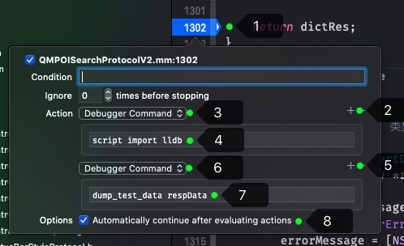

在编写单元测试的过程中，我们经常需要编写一类用例，用于验证后台返回的数据的正确性。
其中，用于验证的数据如何取得，受限于发送请求的安全性要求，一般 app 发送网络请求时会在数据中加入一些校验、防刷的额外信息，导致请求数据内容严重依赖于 app 上下文环境。目前获取后台响应数据主要有两种方法，一种是在 app 中发起真实的请求，接收到响应后存储到文件；第二种是在单元测试用例中模拟 app 发送请求，接收到响应后存储到文件。但以上两种方法都存在一些问题，会对单测的编写和执行效率造成严重影响。
本文提出一种使用 LLDB 调试器自动存储网络请求的响应数据到指定文件的方法，解决了已有方法中存在的问题，并且显著提高了单元测试的编写、执行效率。
已有方法
方法一，在 app 中发起真实的请求，接收到响应后存储到文件。因为是发送真实的网络请求，同时要把我们需要的响应数据存储到文件，所以不可避免地要在 app 工程里修改代码，在接受响应处增加额外的写文件的代码逻辑，对已有功能做一些侵入性修改。
方法二，在单元测试用例中模拟 app 发送请求，接收到响应后存储到文件。由于网络请求的延迟，这种方法会导致单测执行时间过长，且用例失败时不易区分到底是后台返回的响应数据出错，还是本地解析响应数据的代码逻辑出错。
基于 LLDB Python API 的方案
为了解决侵入性修改代码逻辑的问题，我们可以考虑在调试器中捕获数据，并写入文件。因为是在 LLDB 调试器界面中执行自定义操作，所以不需要对代码本身进行修改。为了解决编写、执行效率的问题，我们决定不在单元测试中进行网络请求的验证，只验证客户端代码解析响应数据的逻辑，同时利用 Xcode 提供的自动执行断点的能力，在 app 运行过程中不间断地存储数据。
方法简介
- 利用 LLDB 调试器提供的 Python API，自定义一个将 NSData 类型数据写入文件系统指定路径的 Python 函数，再让 LLDB 运行期间加载这个 Python 函数，同时映射为一个 LLDB 命令。
- 在 Xcode 调试过程中，在接收相应数据的代码处加上断点，断点处执行上一步加载的 LLDB 命令，从而将 NSData 类型数据写入文件系统指定路径。
环境准备
克隆代码库到开发机的指定路径：
git clone https://github.com/liyanage/lldb_utilities ~/git/lldb_utilities
链接代码库里的lldb配置文件到开发机的用户目录：
ln -s ~/git/lldb_utilities/lldbinit ~/.lldbinit
重启 Xcode。至此，每当 Xcode 调试运行 app 时，LLDB 都会加载已写好的自定义命令。
存储流程

- 在接收响应数据的代码打断点，并编辑断点
- 点击 Action 最右侧的➕️，新增一项
- Action 类型选择
Debugger Command - 文本框中输入命令
script import lldb，表示向 Python 环境中加载lldb模块 - 点击 Action 最右侧的➕️，继续新增一项
- Action 类型仍然选择
Debugger Command - 文本框中输入命令
dump_test_data respData。这里dump_test_data命令就是在 Python 中已写好，已加载到 LLDB 中的命令，后面的respData是代码中 NSData 数据的表达式 - 勾选最下方的
Automatically continue after evaluating actions，即表示此断点处在执行完上述命令后会继续运行代码，不会暂停
添加断点后，在调试过程中每次执行过该断点后均会保存一个数据文件到指定位置。默认路径以及文件命名规则为：/tmp/[类名].[方法名].[随机字符串].dat，随机字符串可以保证每次写文件不会覆盖上一次存储的数据。
例如：+[POISearchProtocolV2 parseOnTheWaySearchData:]方法中保存的文件路径为/tmp/POISearchProtocolV2.parseOnTheWaySearchData.01kcl06c.dat。

最佳实践
LLDB 的 Python 环境
在 lldb 调试界面执行命令 script print(sys.version)，
(lldb) script print(sys.version)
3.7.3 (default, Dec 13 2019, 19:58:14)
[Clang 11.0.0 (clang-1100.0.33.17)]
(lldb)
Python REPL
在 lldb 调试界面执行命令 script，进入 REPL。
(lldb) script
Python Interactive Interpreter. To exit, type 'quit()', 'exit()'.
>>> print('Hello, world')
Hello, world
>>>
导入自定义命令
TODO:
查看已导入 lldb 的自定义命令
执行命令command script list：
(lldb) command script list
Current user-defined commands:
cstr_refs -- For more information run 'help cstr_refs'
dump_nsdata -- For more information run 'help dump_nsdata'
dump_test_data -- For more information run 'help dump_test_data'
find_variable -- For more information run 'help find_variable'
malloc_info -- For more information run 'help malloc_info'
objc_refs -- For more information run 'help objc_refs'
pflags -- For more information run 'help pflags'
poc -- For more information run 'help poc'
pp -- For more information run 'help pp'
ptr_refs -- For more information run 'help ptr_refs'
tempdir -- For more information run 'help tempdir'
For more information on any command, type 'help <command-name>'.
(lldb)
Python API 中的 lldb 模块
lldb 模块可以看作是调试器在 Python 环境中的上下文。文档见LLDB Python API
总结
- 在调试器中执行文件存储操作，可以避免对代码的侵入式修改，同时省去了“加代码”-“删代码”这种无意义的操作。
- 使用自动执行断点可以显著提高执行效率。
script import lldb是必需的，不加会导致调试器执行dump_test_data命令时找不到当前frame。但不能理解为什么调试器加载自定义命令的过程中，lldb 模块不能自动导入到 Python 环境中。- 这种方法只能在模拟器调试时使用，真机调试会有文件权限报错。(感谢 paulineli 同学)
参考
本文由 Ltryee
创作，采用 知识共享署名4.0 国际许可协议进行许可
本站文章除注明转载/出处外，均为本站原创或翻译，转载前请务必署名
最后编辑时间为: 2022-06-17T00:46:41+08:00